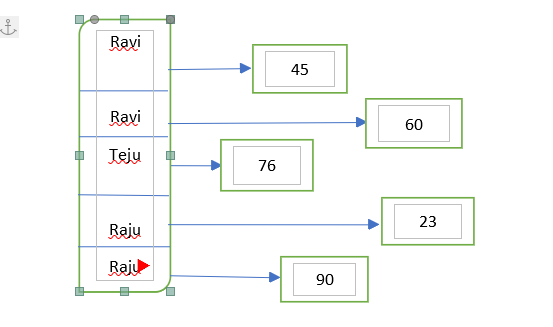
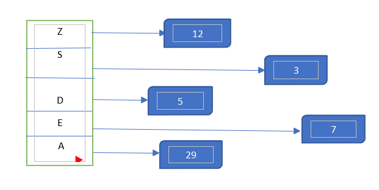

Multimaps are similar to maps where we store elements in the form of key and associated value to it. Instead, Multimap may contain multiple values for same key. Multimaps are internally sorted according to the value of key.
Syntax:
[multimap]<data_types,data_types> [variable_name];
Header file: <map>
multimap<string , int> beds;
bed[“Raju”] = 23;
bed[“Ravi”] = 45;
bed[“Ravi”] = 60;

Here, the key Ravi takes multiple values 45 and 60.
The above figure shows how the values are inserted in the multimap.
Usage of multimaps :
When we want to assign a key with multiple values, then multimaps helps us to store different values with the same key.
Suppose, When we try to note down the vowels and consonants in a particular word, multimaps are beneficial.
Let the given string be “winner winner !! chicken dinner !!” .We want to note down the indices where the vowels and consonants are occurring in a particular word. Let us use multimaps.
In the word winner, consonants are w,n, and r.
( Considering 0-based indexing ).
Alphabet “w” is occurring at index 0.
Alphabet “n” is occurring at indices 2 and 3.
Alphabet “r” is occurring at 5.
The letter “n” has two indices which means for a particular key we have two different values.
All the iterators and functions that are present in the map are also applicable for multimaps.
Output:
Letter is e and occurs at 4
Letter is i and occurs at 1
Letter is n and occurs at 2
Letter is n and occurs at 3
Letter is r and occurs at 5
Letter is w and occurs at 0
Unordered map in C++:
Internally all keys that are present in the map are already sorted unless when we explicitly mention the map is unordered map.
Header file : <unordered_map>
Syntax for unordered_map :
unordered_map<X, Y> [variable_name];
The keys are not sorted internally in the unordered_map.
The time taken to access an element in a unordered_map is generally much faster than time taken to access an element in the map.
The above figure shows how the values are inserted in the unordered maps.
Usage of unordered maps :
Suppose you need to store the elements and its occurrence in a string. When you don’t bother the order of elements are stored. Then we can use unordered map for storing the element as key and its occurrence as its associated value.
Count the number of occurrences of the each of the vowel present in the string
( Ignoring capitals )“ Gold for India ”
Then the vowels present in the string are a, i and o.
we declare unordered map as unordered_map<char,int> count_vowels;
count_vowels[‘a’]=1;
count_vowels[‘i’]=2;
count_vowels[‘o’]=2;
All the iterators and functions that are present in the map are also applicable for unordered maps.

Output:-
Keys and values present inside the map marks:Advantages of Unordered Map:
Unordered map contains no ordering.
For unordered map, time complexity for Insertion takes O(1) average and O(n) for worst case , Searching and Deletion takes O(log n).
Disadvantages of Unordered Map:
More space is required for unordered maps.
Problems to be tried :
Try to solve problems on codechef using hashtag #maps !!
Happy Coding !!!
Happy Coding 😊
By Programmers Army
Contributed by: Ravi Teja Chidurala